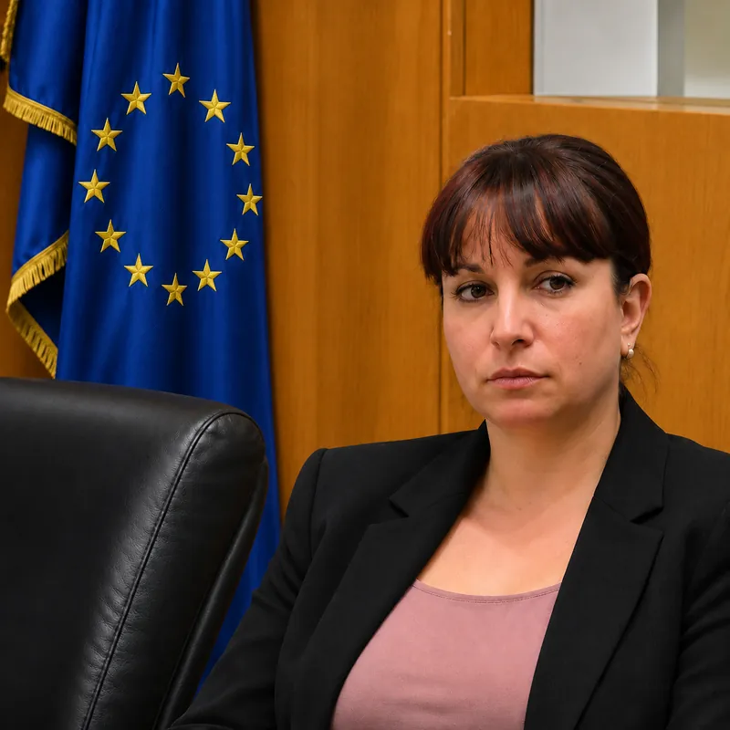

Chi Siamo
LINK-ITALIA & PARTNERS
SOCIETA' DI FORMAZIONE E CONSULENZA
DI FRANCESCA SORCINELLI
e Collaboratori

LINK-ITALIA & PARTNERS SNC
La Società di Formazione e Consulenza, LINK-ITALIA & PARTNERS SNC, costituisce il primo e unico TEAM con un’esperienza ventennale nella Sensibilizzazione dei Cittadini, Formazione dei Professionisti e Consulenze Tecniche sul Fenomeno LINK, ad orientamento Zooantropologico, nel nostro paese.
LINK-ITALIA & PARTNERS Snc è titolare del Programma Antiviolenza We Break THE LINK® - One Safety, One Health, One Welfare® di Livello I e di Livello II e del Marchio per gli Standard di Certificazione We Break THE LINK® - One Safety, One Health, One Welfare®. Certified Company e We Break THE LINK® - One Safety, One Health, One Welfare®. Certified Professional, pienamente allineati ai paradigmi SDGs (Obiettivi di Sviluppo Sostenibile), CSR/PSR (Responsabilità Sociale d'Impresa, Responsabilità Sociale Pubblica), ESG (Ambientale, Sociale e di Governance), utilizzati per valutare l'Impatto Sostenibile e la Responsabilità Etica di un' Azienda/Organizzazione/Istituzione o di un Investimento.
Project Leader e Direttore Scientifico del Programma Antiviolenza WE BREAK THE LINK® - ONE SAFETY, ONE HEALTH, ONE WELFARE®, è la Dott.ssa Francesca Sorcinelli:
“L’esperienza professionale diretta del LINK è stata il primo propulsore che mi ha condotto a studiare l’argomento tanto da arrivare alla strutturazione di un Progetto nazionale in merito. Come nei paesi anglosassoni dove il LINK vanta Associazioni Governative, Associazioni di Polizia e Presidenti di Stato, nel riconoscerlo e contrastarlo, per l’Italia il mio impegno consiste nel far sì che il lavoro professionale quotidiano con l’utenza violata, violenta, depressa, deprivata o anche solo minorile, sia costantemente il referente privilegiato nello sviluppo di una cultura sociale, giuridica, criminologica, vittimologica, pedagogica e veterinaria. Una cultura quindi zooantropologica (Zooantropologia della Devianza) che, come stato di necessità, contempli la crudeltà su animali quale grave reato di per sé, specifico indicatore di pericolosità sociale, sintomo di una situazione esistenziale patogena e parte integrante di altri crimini”. Francesca Sorcinelli (2006)
LINK
LINK nel linguaggio comune inglese significa collegamento. Verso l'inizio degli anni ‘70, negli Stati Uniti, in discipline quali criminologia, psichiatria e psicologia, il termine assume una connotazione tecnica indicando la “Correlazione fra Abusi su Animali e Abusi su Umani”.
Rendendo miglior giustizia alla complessità del fenomeno, in Zooantropologia della Devianza, branca della Zooantropologia fondata da Francesca Sorcinelli in qualità di disciplina di riferimento per l’Italia con LINK si intende la “Stretta Correlazione esistente fra Maltrattamento e/o Uccisione di Animali, Violenza Interpersonale e ogni altra Condotta Deviante, Antisociale e/o Criminale”, F. Sorcinelli (2006).
Francesca Sorcinelli
Francesca Sorcinelli, fondatrice del Progetto LINK-ITALIA nel 2006, Presidente dell’omonima Associazione Senza Scopo di Lucro dal 2012 e Cofondatrice dell’Associazione di Promozione Sociale Volunteers Vs Violence, è una Pedagogista ed Educatrice Professionale Socio Pedagogica, che dopo aver lavorato in Comunità Residenziale Recupero Minori dalla Prostituzione, Comunità Residenziali per Tossicodipendenti e otto anni in una Comunità Residenziale per Minori, attualmente lavora presso la medesima Azienda in una delle Comunità Semiresidenziali Socio-Educative per adolescenti in carico al Servizio Sociale e molti minori dei quali in carico anche al Servizio di Neuropsichiatria per l’Infanzia e Adolescenza.
Fondatrice della Zooantropologia della Devianza, disciplina di riferimento sul LINK per l’Italia, dal 2009 organizza e/o presenzia come Relatore e/o Docente in Conferenze, Convegni, Corsi Formativi, Corsi di Perfezionamento e/o Master Universitari sul Fenomeno LINK ossia sulle Implicazioni Sociali del Maltrattamento e/o Uccisione di Animali; sottoscrive Protocolli d’Intesa Link in Materia di Maltrattamento e/o Uccisione di Animali, Violenza Interpersonale e ogni altra Condotta Deviante, Antisociale e/o Criminale; dirige studi scientifici sul fenomeno. Dal 2021 è Cofondatrice dell’Associazione di Promozione Sociale Volunteers Vs Violence, la prima in Italia, che si occupa della gestione di Case Rifugio Link per la messa in protezione di nuclei familiari composti da Donne e Minori, vittime di violenza, con Animali al seguito. Autrice di vari Manuali sul Fenomeno LINK, è stata Consulente Tecnico nella Legge sul Bullismo e CyberBullismo entrata in vigore il 14 giugno 2024 e sulla Proposta di Legge Dori (atto camera 468) “Modifiche al codice penale e altre disposizioni in materia di prevenzione dei processi di correlazione tra gli abusi sugli animali e la violenza contro le persone”. Svolge inoltre Consulenze Tecniche sulla Pericolosità Sociale delle Condotte in Danno ad Animali nei Procedimenti Penali.
Dal 2025 è Titolare di LINK-ITALIA & PARTNERS – Società per la Formazione e Consulenza, è Titolare del Marchio We Break THE LINK® – One Safety, One Health, One Welfare® e del Programma Antiviolenza per le Certificazioni We Break THE LINK® – One Safety, One Health, One Welfare®. Certified Company e We Break THE LINK® – One Safety, One Health, One Welfare® Certified Professional.
Esiste uno stretto parallelismo fra la storia del Progetto LINK-ITALIA ed i primi approcci scientifici internazionali al Fenomeno LINK.
Dagli esordi ad oggi i ricercatori anglosassoni nell’ambito delle scienze psicosociali e criminologiche, occupandosi di violenza interpersonale e crimine si scontrano con il fenomeno della violenza su animali in modo così costante da doversene fare carico. Un percorso quello degli studiosi, in particolare statunitensi, che è stato vissuto personalmente da Francesca Sorcinelli. Lavorare con i tossicodipendenti non significa infatti lavorare con persone che hanno “semplicemente” un problema di droga, bensì lavorare con tutte le sfaccettature della devianza. Una tipologia di utenza che catapulta sullo scenario della devianza a 360°, consentendo oltremodo di fare esperienza della “cultura di stampo mafioso” e della “cultura di stampo carcerario” e costituendo, in tal senso, un contesto privilegiato di osservazione e trattamento della violenza interpersonale e delle condotte antisociali e/o criminali in genere.
È proprio in questo contesto che, come i primi ricercatori statunitensi, Francesca ha iniziato a confrontarsi ripetutamente col fenomeno della violenza su animali, tanto da doverlo approfondire, studiare e comprendere, soprattutto nelle implicazioni psicosociali. A differenza dei primi ricercatori, potendo beneficiare di un’ampia bibliografia scientifica internazionale, già operativa in tutti gli ambiti professionali statunitensi, ha potuto avvalersi fin dagli esordi, di un prezioso modello di riferimento nella pianificazione del Progetto LINK-ITALIA, adattando le consapevolezze internazionali alla realtà italiana e producendo nuove conoscenze applicabili specificatamente al nostro paese.
“Il maltrattamento e uccisione di animali che dalle Polizie Internazionali è considerato uno specifico indicatore di pericolosità sociale e da «cosa nostra» il tirocinio più efficace per l’iniziazione alla vita delinquenziale, in Italia è ancora considerato un reato di serie b o nemmeno percepito come tale. Di conseguenza, culturalmente parlando, la malavita organizzata avendo compreso il LINK è un passo avanti, nel perseguire i propri scopi, della società civile e professionale che il LINK non lo ha ancora compreso, né tantomeno è in grado di tradurlo in pratiche operative a prevenzione, trattamento e contrasto del fenomeno” Francesca Sorcinelli (2009)
Per una visione dettagliata del lavoro svolto ad oggi dall’Associazione Senza Scopo di Lucro LINK-ITALIA consultare il seguente indirizzo https://www.link-italia.net/curriculum/ o scaricare il Documento LA STORIA DELLA PREVENZIONE, TRATTAMENTO E CONTRASTO DEL LINK IN ITALIA 1997 – AGOSTO 2025.